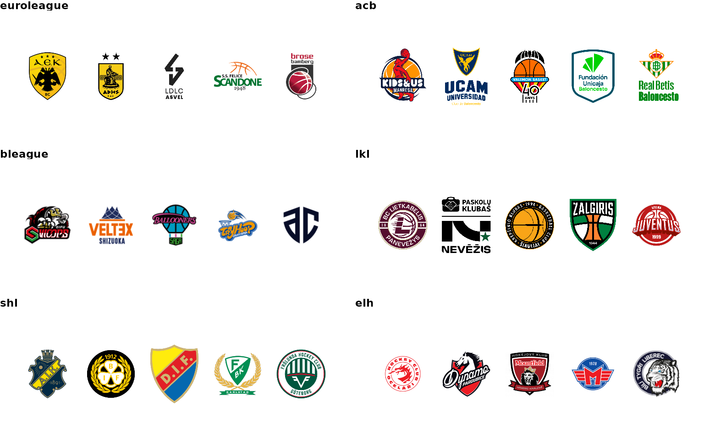

Leagues and Identifiers
Saiem Gilani


Source: vignettes/leagues-and-identifiers.Rmd
leagues-and-identifiers.RmdOn this page
Every team-aware sdvplotR function takes a league and a
team identifier. This article lists the leagues, the identifiers each
one understands, and how to tell sdvplotR which provider’s ids you
have.
The leagues
sdv_leagues() returns the 70 league keys of the
SportsDataverse team index, the same index sdvplot (Python) and
sdvplot-js read:
sdv_leagues()
#> [1] "aaf" "aba" "acb" "ahl"
#> [5] "ajhl" "bbl" "bchl" "bleague"
#> [9] "bnxt" "cchl" "cebl" "cfb"
#> [13] "cfl" "chl" "cricket" "dbbl"
#> [17] "dbl" "easl" "echl" "elh"
#> [21] "euroleague" "f1" "feb" "fiba"
#> [25] "gojhl" "ha" "ibba" "iihf"
#> [29] "kbl" "kijhl" "kzs" "lba"
#> [33] "lkl" "magnus" "mbb" "mhl"
#> [37] "milb" "mjhl" "mlb" "nba"
#> [41] "nbagl" "nbl" "nbl_au" "ncaa_baseball"
#> [45] "ncaa_mhockey" "ncaa_softball" "ncaa_whockey" "nfl"
#> [49] "nhl" "nojhl" "ohl" "ojhl"
#> [53] "phf" "pwhl" "qmjhl" "shl"
#> [57] "sjhl" "soccer" "sphl" "ufl"
#> [61] "usfl" "ushl" "vijhl" "vtb"
#> [65] "wbb" "whl" "wjbl" "wnba"
#> [69] "wnbl" "xfl"They fall into a few families:
-
US major leagues and college sports:
"nfl","nba","wnba","mlb","nhl","cfb","mbb","wbb", the NCAA baseball, softball and hockey leagues, the NBA G League ("nbagl"), Minor League Baseball ("milb"), and the spring football leagues ("ufl","usfl","xfl","aaf"). -
Other North American leagues:
"cfl","cebl", the women’s hockey leagues ("pwhl","phf"), and the minor-pro and junior hockey leagues the HockeyTech feeds cover ("ahl","echl","sphl","chl","ohl","whl","qmjhl","ushl"and the Junior A leagues). -
Soccer, cricket and motorsport:
"soccer"(every ESPN competition),"cricket","f1". -
International basketball and hockey: the national
teams of
"fiba"and"iihf","easl","lba", ESPN’s NBL ("nbl"), and 21 more international basketball and European hockey leagues, listed below with the ids they use.
The id systems each league carries
A team can be named many ways. The index keeps each provider’s
spelling as an id system, and sdv_aliases()
returns every one of them. This table lists the id systems each league
carries. mark, conference and
competition keys are left out, because they only key the
logo archive and are never read when resolving a team.
a <- sdv_aliases()
a <- a[!a$id_system %in% c("mark", "conference", "competition"), ]
systems <- tapply(a$id_system, a$league, function(v) paste(sort(unique(v)), collapse = ", "))
teams <- table(sdv_teams()$league)
knitr::kable(data.frame(
league = names(systems),
teams = as.integer(teams[names(systems)]),
id_systems = unname(systems)
))| league | teams | id_systems |
|---|---|---|
| aaf | 8 | name, pff, team_id |
| aba | 30 | name, team_id |
| acb | 25 | name, team_id |
| ahl | 61 | hockeytech, name, team_id |
| ajhl | 17 | hockeytech, name, team_id |
| bbl | 55 | name, team_id |
| bchl | 23 | hockeytech, name, team_id |
| bleague | 58 | name, team_id |
| bnxt | 23 | name, team_id |
| cchl | 13 | hockeytech, name, team_id |
| cebl | 15 | name, team_id |
| cfb | 687 | cbs, cfbd, espn, espn_abbr, fox, name, ncaa, on3, sdvplotr, sports247, team_id, yahoo |
| cfl | 9 | espn, espn_abbr, name, team_id |
| chl | 41 | hockeytech, name, team_id |
| cricket | 111 | cricinfo, name, team_id |
| dbbl | 12 | name, team_id |
| dbl | 12 | name, team_id |
| easl | 12 | name, team_id |
| echl | 59 | hockeytech, name, team_id |
| elh | 14 | name, team_id |
| euroleague | 89 | name, team_id |
| f1 | 31 | name, team_id |
| feb | 327 | name, team_id |
| fiba | 30 | espn, espn_abbr, name, team_id |
| gojhl | 45 | hockeytech, name, team_id |
| ha | 40 | name, team_id |
| ibba | 21 | name, team_id |
| iihf | 16 | espn, espn_abbr, name, team_id |
| kbl | 10 | name, team_id |
| kijhl | 23 | hockeytech, name, team_id |
| kzs | 11 | name, team_id |
| lba | 24 | name, team_id |
| lkl | 10 | name, team_id |
| magnus | 23 | name, team_id |
| mbb | 366 | espn, espn_abbr, fox, kenpom, name, ncaa, on3, sdvplotr, sports247, team_id, torvik, yahoo |
| mhl | 13 | hockeytech, name, team_id |
| milb | 286 | mlbstats, name, team_id |
| mjhl | 19 | hockeytech, name, team_id |
| mlb | 30 | bref, cbs, espn, espn_abbr, fangraphs, fox, mlbstats, name, sdvplotr, sportsipy, team_id, yahoo |
| nba | 30 | bref, cbs, espn, espn_abbr, fox, name, nba_api, sdvplotr, sportsipy, team_id, yahoo |
| nbagl | 32 | espn, espn_abbr, name, team_id |
| nbl | 10 | espn, espn_abbr, name, team_id |
| nbl_au | 26 | name, team_id |
| ncaa_baseball | 414 | espn, espn_abbr, name, ncaa, team_id |
| ncaa_mhockey | 110 | espn, espn_abbr, name, team_id |
| ncaa_softball | 415 | espn, espn_abbr, name, ncaa, team_id |
| ncaa_whockey | 48 | espn, espn_abbr, name, team_id |
| nfl | 32 | bref, cbs, espn, espn_abbr, fox, name, nflverse, sdvplotr, sportsipy, team_id, yahoo |
| nhl | 32 | cbs, espn, espn_abbr, fox, name, nhl, nhl_id, sdvplotr, team_id, yahoo |
| nojhl | 27 | hockeytech, name, team_id |
| ohl | 27 | hockeytech, name, team_id |
| ojhl | 28 | hockeytech, name, team_id |
| phf | 8 | name, team_id |
| pwhl | 12 | hockeytech, name, team_id |
| qmjhl | 26 | hockeytech, name, team_id |
| shl | 25 | name, team_id |
| sjhl | 13 | hockeytech, name, team_id |
| soccer | 2681 | name, team_id |
| sphl | 16 | hockeytech, name, team_id |
| ufl | 11 | espn, espn_abbr, name, team_id |
| usfl | 9 | name, team_id |
| ushl | 17 | hockeytech, name, team_id |
| vijhl | 12 | hockeytech, name, team_id |
| vtb | 11 | name, team_id |
| wbb | 364 | espn, espn_abbr, fox, name, ncaa, on3, sdvplotr, sports247, team_id, torvik, yahoo |
| whl | 23 | hockeytech, name, team_id |
| wjbl | 15 | name, team_id |
| wnba | 15 | bref, espn, espn_abbr, fox, name, nba_api, sdvplotr, sportsipy, team_id, yahoo |
| wnbl | 11 | name, team_id |
| xfl | 11 | espn_abbr, name, team_id |
Every league has team_id (the index’s own id) and
name (team names, nicknames and abbreviations). The richest
leagues have many more id systems. For example, men’s college basketball
carries ESPN, NCAA, KenPom, Torvik, Fox, Yahoo, 247Sports and On3
ids.
The international basketball and European hockey leagues
These 21 leagues carry only team_id and
name (plus the logo archive’s mark keys), as a
few others do ("easl", "lba",
"soccer"). Their team_id is the id the
league’s own data source uses, so a team id taken from that source
resolves as it is. Names work everywhere.
league |
League |
team_id is |
|---|---|---|
"euroleague" |
EuroLeague | the club code of the EuroLeague API
("MAD", "ULK") |
"acb" |
Liga ACB (Liga Endesa, Spain) | api2.acb.com’s club_id
|
"feb" |
Primera FEB, Segunda FEB and Liga Femenina (Spain) | the FEB team id, which is a team-season id (one per season) |
"bbl", "dbbl"
|
Basketball Bundesliga and Damen-Basketball-Bundesliga (Germany) | the SCB team id behind easycredit-bbl.de and toyota-dbbl.de |
"bnxt" |
BNXT League (Belgium and the Netherlands) | the stable uu_team_id
|
"aba" |
ABA League (Adriatic) | aba-liga.com’s club id |
"ibba" |
Israeli Basketball Premier League | basket.co.il’s team_uid
|
"kzs" |
Slovenian men’s first league (KZS) | api.kzs.si’s club_id
|
"lkl" |
Lithuanian Basketball League (LKL) | lkl.lt’s team id |
"dbl" |
Basketligaen (Denmark) | the Genius Sports team id |
"vtb" |
VTB United League | Infobasket’s TeamID
|
"bleague" |
B.League (Japan) | the club TeamID of the B.League standings |
"kbl" |
Korean Basketball League | the club team_code
|
"wjbl" |
W League (Japan) | the franchise team_id
|
"nbl_au", "wnbl"
|
NBL and WNBL (Australia) | the DataCore team UUID (ESPN’s NBL stays league "nbl",
with ESPN ids) |
"shl" |
SHL (Sweden) | the StatNet team code ("FBK", "DIF") |
"ha" |
HockeyAllsvenskan (Sweden) | the StatNet team id (team_statnet_id) |
"elh" |
Czech Extraliga | hokej.cz’s team id |
"magnus" |
Ligue Magnus (France) | the French federation’s team id |
sdv_teams("euroleague")[1:5, c("team_id", "name")]
#> team_id name
#> 1 AEK AEK Athens
#> 2 ARI Aris TT Bank
#> 3 ASV LDLC ASVEL Villeurbanne
#> 4 AVE Air Avellino
#> 5 BAM Brose Bamberg
sdv_teams("shl")[1:5, c("team_id", "name")]
#> team_id name
#> 1 AIK AIK
#> 2 BIF Brynäs IF
#> 3 DIF Djurgårdens IF
#> 4 FBK Färjestad BK
#> 5 FHC Frölunda HCA name or a team_id resolves the same team. Names match
regardless of case, accents and punctuation, and Japanese kana fold as
sdvplot folds them, so B.League and W League names resolve alike in R
and Python:
sdv_resolve(c("Real Madrid", "MAD", "real madrid"), league = "euroleague")
#> [1] "MAD" "MAD" "MAD"
sdv_resolve("A千葉", league = "bleague")
#> [1] "2486"Their logos draw like any other league’s:
leagues <- c("euroleague", "acb", "bleague", "lkl", "shl", "elh")
logos <- do.call(rbind, lapply(leagues, function(lg) {
t <- sdv_teams(lg)
# keep five teams with an archived logo (sdv_logo_url() warns for the rest)
t <- head(t[!is.na(suppressWarnings(sdv_logo_url(t$team_id, lg))), ], 5)
data.frame(league = lg, team = t$team_id, x = seq_len(nrow(t)))
}))
logos$league <- factor(logos$league, levels = leagues)
# geom_sdv_logos() takes one league per layer: one layer per league
layers <- lapply(split(logos, logos$league), function(d) {
geom_sdv_logos(aes(x = x, y = 0, team = team), data = d, league = as.character(d$league[1]), width = 0.14)
})
ggplot() +
layers +
facet_wrap(~league, ncol = 2) +
scale_x_continuous(limits = c(0.5, 5.5)) +
theme_void() +
theme(
strip.text = element_text(face = "bold", hjust = 0),
plot.background = element_rect(fill = "white", colour = NA)
)
Switching between id systems
By default (id_system = "auto"), sdvplotR tries every id
system in priority order and stops at the first that knows the value. So
one call can mix spellings:
# an ESPN id, a KenPom name, a Yahoo id and a nickname: one team (UConn)
sdv_resolve(c("41", "Connecticut", "ncaab.t.129", "UConn Huskies"), league = "mbb")
#> [1] "41" "41" "41" "41"
# an nba_api id, an ESPN id and an abbreviation: the Lakers
sdv_resolve(c(1610612747, 13, "LAL"), league = "nba")
#> [1] "13" "13" "13"Pass id_system when you know which provider your values
come from. That is needed for the id systems "auto" never
tries, because their numbers overlap ESPN’s: "nhl_id" (NHL
stats API ids), "fox", "cbs",
"sports247" and "on3". Fox’s id for UConn is
54, which "auto" reads as an ESPN id and does
not find:
sdv_resolve("54", league = "mbb", id_system = "fox")
#> [1] "41"Naming the id system also stops a value matching by accident under another system. Every helper takes the same argument, so a column of Fox ids can go straight into a plot:
ggplot(df, aes(x, y)) +
geom_sdv_logos(aes(team = fox_id), league = "mbb", id_system = "fox", width = 0.06)To see the values one team carries in each id system, filter
sdv_aliases():
a <- sdv_aliases("mbb")
a[a$team_id == "41" & a$id_system %in% c("espn", "kenpom", "torvik", "fox", "yahoo"), ]
#> league id_system value team_id valid_from valid_to
#> 419 mbb espn 41 41 NA NA
#> 1148 mbb fox 54 41 NA NA
#> 1282 mbb kenpom Connecticut 41 NA NA
#> 12487 mbb torvik Connecticut 41 NA NA
#> 12900 mbb yahoo ncaab.t.129 41 2004 2007
#> 12901 mbb yahoo ncaab.t.129 41 2014 NA
#> 12902 mbb yahoo ncaab.t.129 41 NA 2002Some aliases carry valid_from / valid_to
seasons, for a code reused by another team or an id a provider changed.
Pass season to pick the team that held the code that season
(split seasons take their ending year, 2021 for 2020-21):
# the Quebec Nordiques: the franchise's team_id, today the Colorado Avalanche
sdv_resolve("QUE", league = "nhl", season = 1990)
#> [1] "17"Values that do not resolve become NA with one warning
per call. See Troubleshooting for
what to do next.
For the international leagues at work, with real standings joined by these ids, see International Basketball and European Hockey.
Related SportsDataverse packages
- sdvplot - the Python plotting package
- sdvplot-js - the JavaScript / TypeScript plotting packages
- cfbfastR - college football
- hoopR - men’s basketball
- wehoop - women’s basketball
- baseballr - baseball
- fastRhockey - hockey
- oddsapiR - betting odds
- sportyR - playing surfaces
- sportsdataverse-py - the Python package
- sportsdataverse-R - the R meta-package